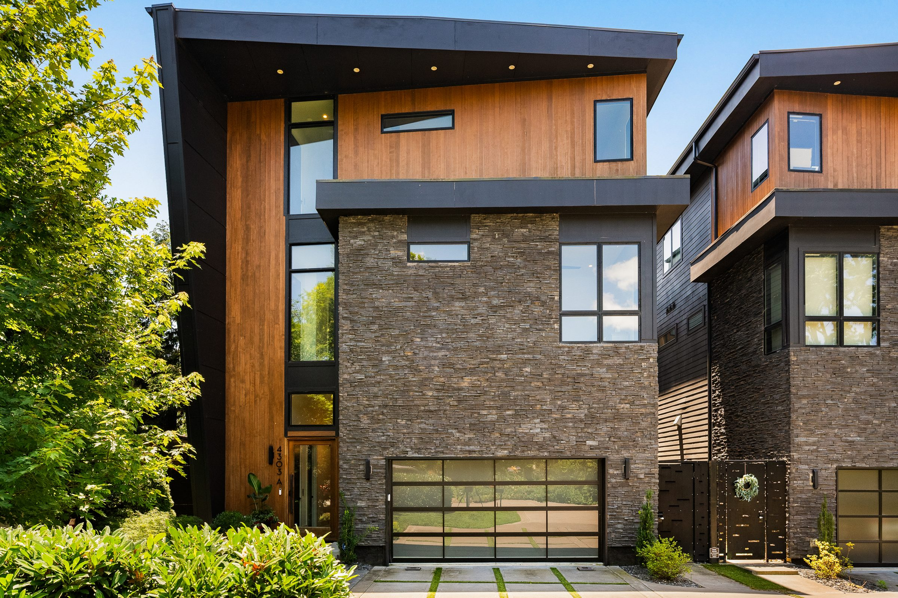

The Residence
A mahogany pivot door set between vertical cedar and hand-stacked stone opens this three-story contemporary, built in 2021 by Richland Building Partners and held since by a single owner. Three thousand four hundred and ninety square feet, four bedrooms, four full baths and a half — and, unusually for the street, a full-size elevator serving every floor.
The main level reads open from front to back. A gas fireplace in a tiled surround anchors the living room; a wall of black-framed glass runs the width of the rear and opens onto the courtyard. The kitchen sits at the other end of the same room, built around a waterfall quartz island with seating for four, with matte black cabinetry running floor to ceiling. Ceilings are tall throughout and custom window treatments are already in place.
Upstairs the primary suite takes a full wall of black board-and-batten and still has room for a seating area of its own. Above it, the bonus room pairs a wet bar — beverage refrigerator, undercounter storage, open shelving — with space for a full-size pool table and a walkout to the deck.
That covered third-floor deck is the house's best room for half the year: outdoor kitchen, gas grilling, a fire table and lounge seating, screened in cedar and dark shiplap. At ground level the courtyard off the living room does the same work on a smaller scale — turf, string lights, a dining table, fully fenced, and nothing to mow. The two-car garage is wired for EV charging.
Film
Specification
Appointments
Gallery
Location
Sylvan Park is the flat, tree-lined grid west of Centennial Park where the streets are named for states — Utah, Nevada, Idaho, Dakota — and most of the housing stock is early twentieth-century cottages with newer infill woven between them. Murphy Road carries the neighborhood's restaurants: Park Café, Caffè Nonna, McCabe Pub, Star Bagel, Edley's Bar-B-Que and The Produce Place are all within a few minutes. The Richland Creek Greenway and the 27 holes at McCabe Golf Course sit on the western edge, and downtown Nashville is roughly ten minutes east.
Presented By
Ryan Stonehouse
Inquiries
Call or text Ryan Stonehouse at (615) 812-0066, or email ryan@edengrovetennessee.com.